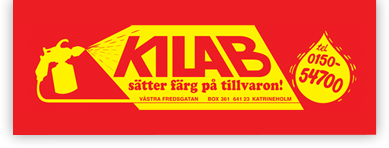
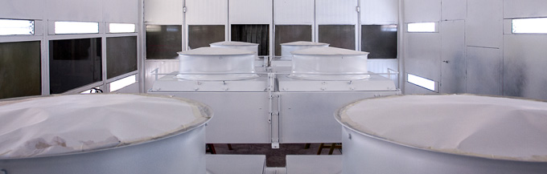
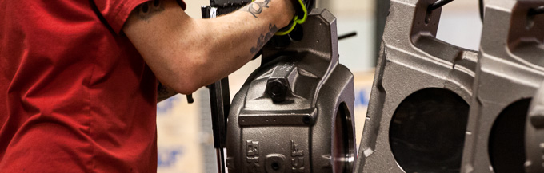
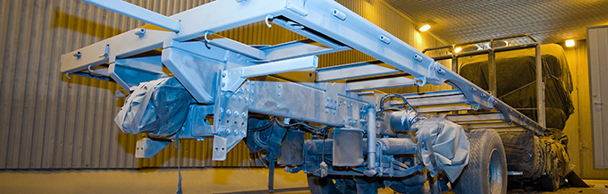
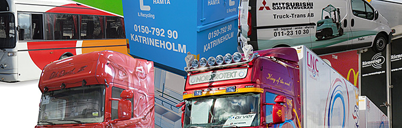

Industrilackering
Från små fästelement till större stålkonstruktioner.


KILAB Katrineholm
KILAB hjälper företag med lackering, blästring, pulverlackering och ytbehandling i Katrineholm.
Ring 0150-547 00Det här gör KILAB
Från små fästelement till större stålkonstruktioner.
Förbehandling för hållbart rostskydd och rätt yta före lackering.
Manuell pulverlackering i små och medelstora serier.
Målningssystem för objekt som utsätts för tuffare miljöer.
Dekor och detaljer när det passar bättre än lackering.



Tf. VD/Marknad
Platschef / Ägare
Design & Dekor
Besöksadress industri
Västra Fredsgatan
641 39 Katrineholm
Företagsuppgifter
Katrineholms Industrilackering AB
Org. nr. 556104-1368